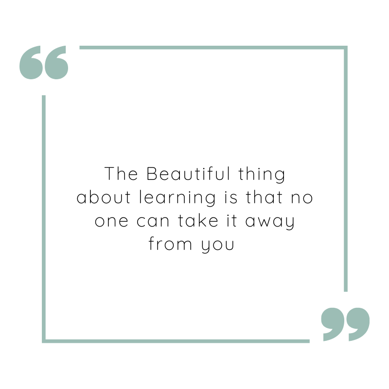
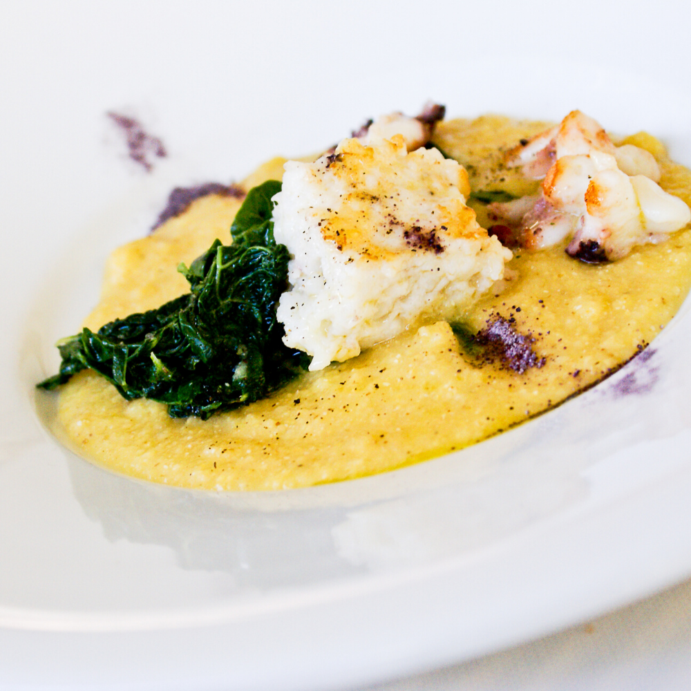

About Us
As part of our Code First Girls course we have started this project as we wanted to share some useful resources to pass the time and ease your mind during these difficult times.

Cooking
From pasta’s to healthy salad’s there are many recepies here for you to try with much free time at hand! They are easy and quick to stay healthy without taking too much time of your day.

Reading
Our top selection of books to read at home and staying informed! While just enjoying an afternoon on the couch with a lovely coffee.